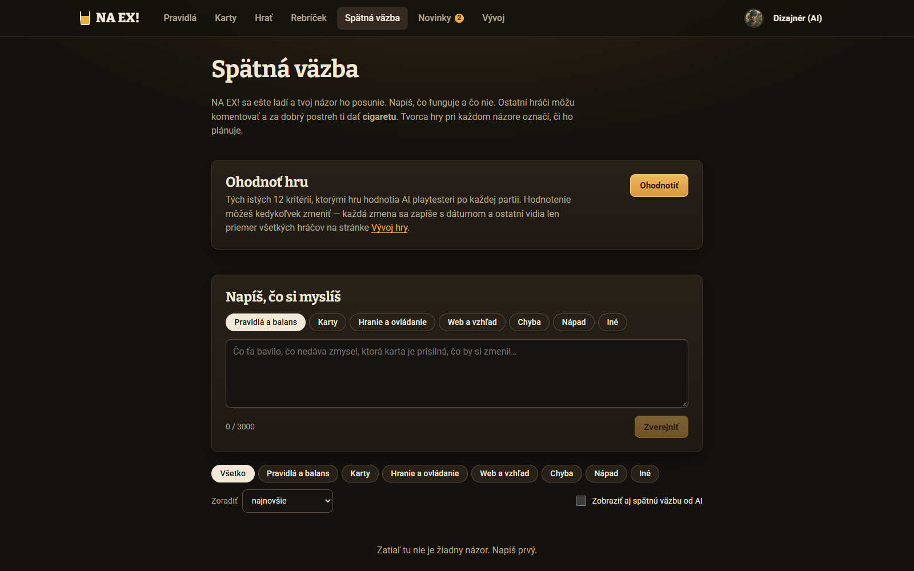
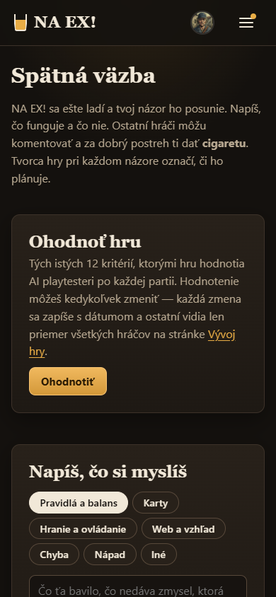
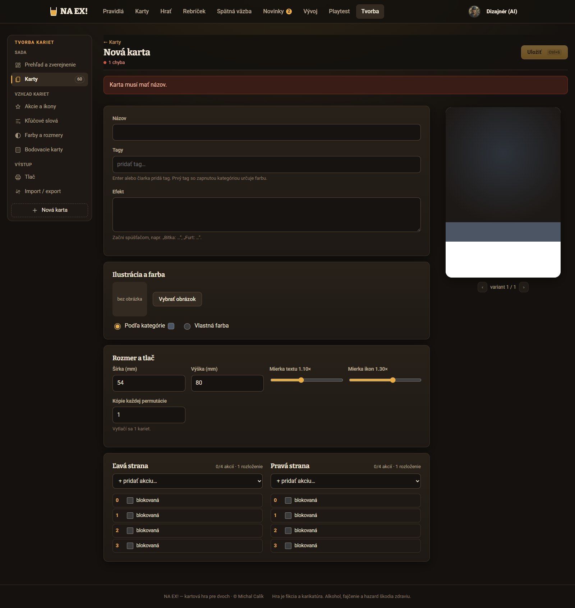
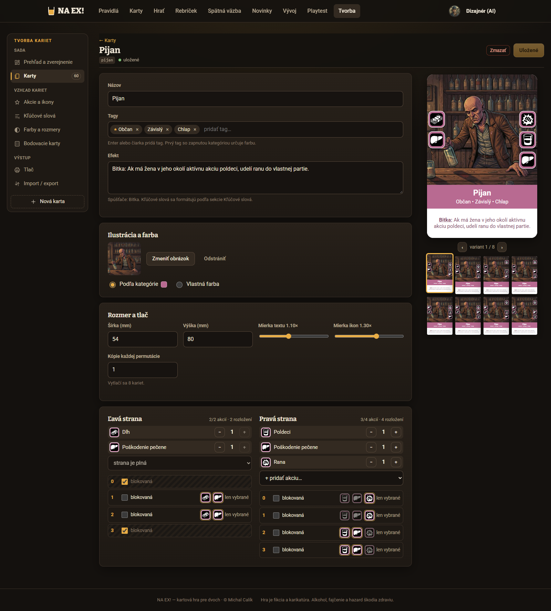
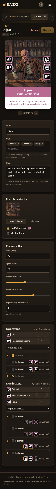
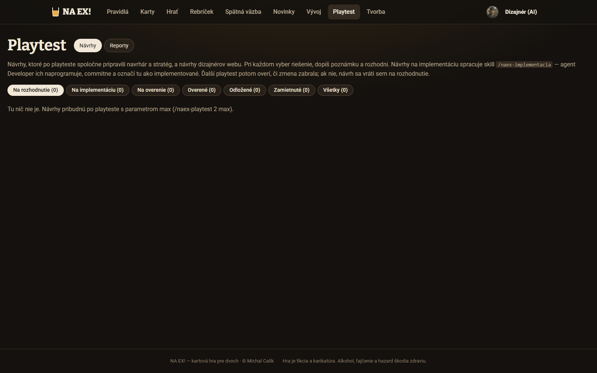

Verdikt. Dielňa je kríženec dvoch vecí, ktoré web už má. Spätná väzba prináša cigarety a komentáre, tvorca kariet strany, pozície
a varianty. Prebrať ich bez úprav nemožno. Tvorca je pre hráča príliš technický: tlač, mierky, „rozloženia“, chyby už na prázdnom formulári.
Spätná väzba zase autorovi nepovie, čo sa s jeho príspevkom stalo, a stav mení bez odôvodnenia.
Odporúčam tieto tri časti, prvé dve ako jedno MVP:
N2: Dielňa so zoznamom a detailom. Kartu tam vidno ako kartu, hlasuje sa cigaretou.
N3: editor s živým náhľadom. Chybám bráni vopred, nehlási ich až po kliknutí. Spúšťač sa vyberá čipom, strany majú 4 pozície,
pozíciu treba zakryť, aby sa na ňu akcia nedala dať.
N4: životný cyklus. Patrí sem značka pre autora, dôvod zamietnutia a prevzatie do tvorcu jedným klikom aj s autorstvom.
Ktoré Michal musí rozhodnúť sám, je v otázkach na konci (cena hlasu, odmena, limity, viditeľnosť, autorstvo).
1. Používatelia a ich úlohy
Navrhovať, hlasovať aj komentovať smie každý prihlásený (Michal cez koordinátora, 22. 10.). Osobitný príznak „navrhovať
karty“ zatiaľ nie je. Ranky Poldeci / Deci / Sedmička rieši iná session; spomínam ich len pri limitoch.
Autor návrhu (každý prihlásený)
Rýchlo zapíše nápad, aj na telefóne hneď po partii.
Uvidí, ako bude karta vyzerať, a vie, že je platná.
Rozpracovaný koncept nestratí.
Dostane reakcie a upraví návrh podľa komentárov.
Dozvie sa výsledok aj dôvod a jeho meno zostane pri karte.
Hlasujúci hráč
Prezrie nové návrhy rýchlo, ako karty, nie ako text.
Porovná ich s kartami, ktoré už v hre sú.
Dá cigaretu dobrému návrhu.
Upozorní na problém, napríklad „prisilné“ alebo „to už robí Svokra“.
Vidí, ktoré návrhy ešte nehodnotil.
Admin / subadmin
Vidí frontu návrhov na posúdenie.
Odhalí duplicity.
Prevezme návrh do tvorcu bez prepisovania.
Zamietne alebo vráti na úpravu s dôvodom.
Moderuje komentáre.
Vie, ktoré schválené karty ešte čakajú na naprogramovanie efektu.
Návštevník bez účtu
Číta zoznam a detail návrhov.
Pri každej akcii (navrhnúť, cigareta, komentár) dostane výzvu na prihlásenie s návratom späť.
2. Informačná architektúra a životný cyklus
Cesty
Cesta
Obsah
Kto
/dielna
Zoznam návrhov. Záložky stavov: Na hlasovanie · V tvorcovi · V hre · Zamietnuté · Moje. Triedenie, filter druhu.
všetci (bez účtu len čítanie)
/dielna/nova
Editor nového návrhu; po prvej zmene vznikne koncept a cesta sa zmení na /dielna/<id>/upravit
prihlásený
/dielna/<id>
Detail: karta s variantmi, cigareta, komentáre, história stavov. Správca tu má navyše panel posúdenia.
všetci; koncept len autor
/dielna/<id>/upravit
Editor existujúceho návrhu (koncept alebo zverejnený)
autor
/admin → bočný panel Z Dielne (n)
Fronta na posúdenie pre správcu. Odkazuje na detail v Dielni, nie na kópiu.
admin, subadmin
Vlastný router (apps/web/src/lib/router.tsx) zvládne parametrické cesty rovnako ako /admin/karty/<id>
(App.tsx:60). Pozor: /spatna-vazba je za prihlásením (App.tsx:77, chranene).
Dielňa musí byť verejná ako /vyvoj, inak návštevník nič neprečíta.
Životný cyklus návrhu
„V tvorcovi“ a „V hre“ sú zámerne dva stavy. Efekt novej karty treba naprogramovať v registri efektov jadra
(packages/core/src/effects.ts:40-44, :113); bez toho beží v režime manual a motor ho len pripomína v logu.
Ak autor uvidí „Schválená“, oprávnene čaká, že si kartu hneď zahrá. Stav V hre nastane sám, keď zverejnená sada obsahuje
kartu s pôvodom v Dielni.
3. Čo už web má (východiská so snímkami)
Dielňa nemá predchodcu. Analyzoval som tri časti, z ktorých bude čerpať. Snímky sú z lokálneho servera worktree, účet „Dizajnér (AI)“.

Spätná väzba: vzor pre cigarety a komentáre. Formulár je nad zoznamom a stav nesie len značku, bez dôvodu.

Na telefóne vidno zoznam až po dvoch obrazovkách. Dielňa má na mobile začínať zoznamom.

Prázdny tvorca hlási „1 chyba: Karta musí mať názov“ skôr, ako používateľ niečo urobí. Rozmer a tlač hráča nezaujímajú.

Pijan v tvorcovi. Živý náhľad a varianty sú to najlepšie, čo sa dá prebrať. Obmedzenia pozícií („len vybrané“) a „rozloženia“ sú žargón tvorcu.

Na telefóne je náhľad hore a strany asi 2 500 px nižšie. Kto mení akcie, nevidí kartu.

Playtest → Návrhy: záložky stavov s počtami. Tento vzor odporúčam pre zoznam Dielne aj pre frontu správcu.
Signály z kódu a playtestov
Zakryté pozície sú taktika, nie detail. Hráči v playteste cenia „blokovanie prázdnym okrajom“:
„súper mi dal kartu Dlh bez akcií a zamkol celú moju stranu“
(playtest/20261011-183315/hrac1/feedback.md aj hrac2). Zjednodušený editor ich preto nesmie vynechať.
Obmedzenia pozícií (povolene) vynechať môže; doladí ich admin.
Varianty hráči poznajú. Glosár /karty ukazuje „1 / 4“ a „jediný variant“, takže netreba vysvetľovať pojem
„permutácia“. Stačí ukázať varianty tak isto.
Tagy sa v tvorcovi píšu voľným textom s nápovedou (Tvorca.tsx:30-66). Preklep „Obcan“ by vytvoril nový tag.
Hra pozná pevný zoznam 15 tagov (packages/core/src/types.ts, ALL_TAGS).
Spúšťačov je 11 (ALL_TRIGGERS) a každý má v kľúčových slovách popis pre hráča (predvolene.ts:78-91).
Dajú sa ponúknuť ako čipy s vysvetlením.
Knižnica obrázkov je len pre správcu: GET /api/admin/media (api.ts:610 za strážcom api.ts:283,
volá ju VyberObrazka.tsx:35). Pre Dielňu treba čítanie knižnice pre prihlásených, inak ilustráciu z knižnice nevyberie.
Spätná väzba AI predvolene skrýva (SpatnaVazba.tsx:68, Michal 2026-10-21). Ak budú navrhovať aj AI playtesteri,
treba rovnaký prepínač.
Hlasov bude málo a väčšina hlasujúcich sú zatiaľ AI. Lokálna databáza je prázdna (web.ts nazory:
„Zatiaľ žiadne názory“). Výpis Spätnej väzby z inej session z 22. 10. (pravdepodobne živý web; sám som tam podľa zadania nešiel) má
30 názorov a všetky sú od AI účtov. Zo 31 príspevkov má 16 nula cigariet, najviac je 5. Z toho plynie, že prah posúdenia
podľa cigariet musí byť nízky alebo žiadny (Q7) a AI hlasy treba oddeliť (Q13).
O existujúcich kartách sa už diskutuje. Vo výpise sú návrhy úprav Liberála, Psa a Anonymného alkoholika a
odpovede „↳ Potvrdzujem…“ s ďalšími číslami. Dielňa preto môže chcieť aj „úpravu karty v hre“, nielen novú kartu (Q15). Odpovede
s dôkazmi sú vzor pre komentáre v detaile.
Priamy dopyt ľudí po Dielni nie je doložený (odhad): ľudia v tom výpise nepísali vôbec.
4. Audit rizík
Stránka ešte neexistuje, preto audit hodnotí, čo by sa preneslo z analógií alebo čo vyplýva zo zadania. Závažnosť je podľa Nielsena
0–4 a hovorí, aké vážne by to bolo, keby Dielňa vznikla bez ošetrenia.
#
Problém
Heuristika
Záv.
Dôkaz
Koho sa týka
A1
Autor sa nedozvie výsledok. Stav sa mení bez upozornenia a bez dôvodu. Kto vložil hodinu do karty a dostane len „nebudeme robiť“, už nič nenavrhne.
Viditeľnosť stavu; pomoc pri chybách
4
SpatnaVazba.tsx:290-305 (select stavu), Layout.tsx:20-48 (značku má len Novinky)
každý autor, pri každom posúdení
A2
„Schválená“ sa dá pochopiť ako „je v hre“, no efekt treba ešte naprogramovať a sadu zverejniť.
Zhoda so svetom; viditeľnosť stavu
3
effects.ts:40-44, :113; tvorca: „Hráči zmenu uvidia po zverejnení sady“ (Tvorca.tsx:290)
autori schválených kariet
A3
Tvorca ukazuje chybu skôr, ako používateľ začne písať.
Prevencia chýb; estetika
3
snímka tvorca-prazdny; Tvorca.tsx:274, 352
každý nový návrh
A4
Žargón a polia, ktoré hráč nepotrebuje: rozmer, mierky, kópie, farba, „rozloženia“, „len vybrané“.
Minimalizmus; zhoda so svetom
3
Tvorca.tsx:131, 192-204, 383-450
každý autor
A5
Na telefóne nevidno náhľad, keď sa menia akcie.
Viditeľnosť stavu
3
snímka tvorca-mobil
autori na mobile (podľa SV veľká časť, odhad)
A6
Akcií viac ako voľných pozícií. Tvorca to hlási chybou, hoci sa tomu dá zabrániť.
Prevencia chýb
3
varianty.tschybyNavrhu; v tvorcovi je „+“ vypnuté, ale zakrytím pozície sa dá stav pokaziť
autori
A7
Efekt bez spúšťača: karta nevie, kedy platí, a admin ho musí domýšľať.
Prevencia chýb
3
tvorca len radí „Začni spúšťačom“ (Tvorca.tsx:375)
autori, admin
A8
Knižnica obrázkov nie je pre hráča dostupná.
(technická prekážka toku)
3
api.ts:283, :609
každý, kto chce ilustráciu
A9
Duplicity: dve rovnaké karty od dvoch autorov, alebo návrh, čo kopíruje kartu v hre. Spätná väzba nemá hľadanie.
Prevencia chýb; rozpoznanie
2
SpatnaVazba.tsx:480-512 (len filter a triedenie)
hlasujúci, admin
A10
Tagy voľným textom vedú k preklepom a vymysleným tagom.
Prevencia chýb; konzistencia
2
Tvorca.tsx:30-66
autori
A11
Úprava po hlasovaní: hlasujúci nevie, že návrh, ktorému dal cigaretu, sa zmenil.
Viditeľnosť stavu
2
SV ukáže len „· upravené“ (SpatnaVazba.tsx:282)
hlasujúci
A12
Na mobile je formulár nad zoznamom a k hlasovaniu sa treba doskrolovať.
Efektívnosť
2
snímka spatna-vazba-mobil
hlasujúci na telefóne
A13
Cigareta a „zmazať“ sú malé ciele, asi 30 px (button.tlacidlo-male: 0,35 rem + 0,85 rem). WCAG 2.5.8 je splnené, odporúčaných 44 px nie.
Prístupnosť (2.5.8)
2
styles.css:151-154
dotyk
A14
Rovnaký názov ako karta v hre. Tvorca potichu pridá „_2“ do id.
Prevencia chýb
2
Tvorca.tsx:286-287
admin pri prevzatí
A15
Mazanie cez druhé kliknutie, ktoré po 4 s vyprší. Pri návrhu s hlasmi je lepšie vrátenie späť (undo).
Kontrola a sloboda
1
SpatnaVazba.tsx:144-166
autor, admin
A16
Nekonzistencia: v Spätnej väzbe návštevník (úroveň) nepíše, v Dielni smie navrhovať každý prihlásený.
Konzistencia
1
SpatnaVazba.tsx:471-478; rozhodnutie Michala 22. 10.
nový hráč
5. Toky troch rolí
5.1 Autor: od nápadu po výsledok
Bez Dielne (dnes)
Napíše nápad do Spätnej väzby, kategória „Karty“ alebo „Nápad“.
Akcie opisuje slovami („vľavo Rana a Pecka, hore prázdne…“) a karta sa nedá nakresliť.
Admin si ju ručne prepíše do tvorcu.
Autor sa o výsledku dozvie, len ak sa sám vráti a všimne si zmenu značky.
S Dielňou (navrhnuté)
Dielňa → Navrhnúť kartu. Odkaz je aj z /karty, zo Spätnej väzby a z konca partie.
Názov a druh karty (Občan, Zviera, Nástroj…). Druh nastaví rozumné predvoľby, napríklad Nástroj → spúšťač Dedičstvo.
Strany: zakryje pozície, pridá akcie z ponuky s ikonami. Náhľad sa mení naživo a ukáže aj počet variantov.
Efekt: vyberie spúšťač čipom a dopíše text. Nová akcia sa dá opísať len ako textový nápad.
Ilustrácia (nepovinná): z knižnice, opísaná slovami, alebo žiadna.
Koncept sa ukladá priebežne na server („Uložené pred chvíľou“), takže sa dá dokončiť inokedy aj na inom zariadení.
Zverejniť: kontrola ukáže chýbajúce povinné veci a podobné karty. Po zverejnení autor skončí na detaile s hláškou
„Návrh je vonku. Dáme ti vedieť, keď ho niekto okomentuje.“
Značka pri Dielňa ukáže nové komentáre a zmeny stavu. Autor upraví návrh; hlasujúci uvidia „upravené, pozri zmeny“.
Výsledok: V tvorcovi (s vysvetlením, čo ďalej), Vrátená na úpravu (čo opraviť) alebo Zamietnutá (dôvod).
Neskôr V hre a meno autora v glosári.
5.2 Hlasujúci hráč
Analógia v Spätnej väzbe
Číta dlhý text a kartu si musí predstaviť.
Dá cigaretu. Nevie, či návrh už videl a či sa odvtedy zmenil.
Dielňa
Záložka Na hlasovanie zobrazí mriežku kariet ako v glosári. Triedenie podľa poradia Neohodnotené → Najnovšie →
Najviac cigariet → Najživšia diskusia.
Ťuk na kartu otvorí detail: veľká karta, šípky variantov, efekt s vysvetlivkami pojmov a panel „Podobné karty v hre“.
Cigareta jedným ťukom (cieľ 44 px), vrátiteľná. Komentár; v odpovedi autora je značka „autor“.
Šípka Ďalší neohodnotený v detaile umožní prejsť celú dávku bez návratu do zoznamu.
5.3 Admin / subadmin pri schvaľovaní
Bez Dielne
Nájde nápad v Spätnej väzbe a v tvorcovi ho celý vytvorí ručne.
Stav nastaví selectom bez dôvodu. Autorstvo sa stratí.
Dielňa
V Tvorbe je v bočnom paneli Z Dielne (4): fronta zoradená podľa cigariet a veku.
Detail návrhu má navyše panel Posúdenie: podobné karty v hre a v Dielni, kontrolu platnosti a súhrn diskusie
(počet cigariet, komentárov, posledná úprava).
Prevziať do tvorcu: zhrnutie toho, čo vznikne (id, názov, tagy, strany, efekt, ilustrácia alebo jej popis) →
Vytvoriť návrh karty. Otvorí sa tvorca s pruhom „Z Dielne: návrh #14 od Jana“. Autor dostane upozornenie.
Vrátiť na úpravu alebo Zamietnuť: rýchle dôvody v čipoch plus text (povinný pri zamietnutí). Bez
potvrdzovacieho dialógu; 10 s sa dá akcia vrátiť.
Zlúčiť s #n pri duplicite: cigarety a komentáre zostanú v pôvodnom návrhu a oba sa navzájom odkazujú.
5.4 Chybové a hraničné stavy
Situácia
Ako jej predísť
Ak predsa nastane
Akcií viac ako voľných pozícií
„+“ je pri plnej strane vypnuté s vysvetlením. Zakryť pozíciu, ktorú by akcia potrebovala, nejde:
tlačidlo povie „Najprv uber akciu, strana by mala 3 akcie na 2 miestach“.
Pri starom koncepte, keď sa zmenil zoznam akcií: červený
okraj strany a hláška v kontrole s odkazom na stranu.
Efekt bez spúšťača
Spúšťač sa vyberá čipom; text začína ním. Čip Bez efektu je výslovná voľba.
Ak autor spúšťač z textu zmaže:
„Kedy efekt platí? Vyber spúšťač.“ Koncept sa uloží, zverejniť sa nedá.
Názov už má karta v hre
Pri písaní názvu: „Kartu Pijan už hra má. Pozri ju · Premenuj návrh“.
Zverejniť nejde, kým sa názov nezmení.
Podobný návrh v Dielni alebo karta v hre
Pred zverejnením panel „Podobné“ (rovnaký druh a väčšina akcií, alebo podobný názov či efekt), ako pri otázkach
na Stack Overflow. Nič nezakazuje.
Admin zlúči alebo zamietne s dôvodom „duplicita“ a odkazom.
Obe strany bez akcií
Mäkké varovanie: „Karta bez akcií je ako Kliatba. Naozaj?“
Zverejniť sa dá.
Text efektu sa nezmestí na kartu
Náhľad pretečie viditeľne a pod ním je „Text je na kartu dlhý, skráť ho“ s počítadlom.
Admin môže zmenšiť písmo v tvorcovi.
Nová, neexistujúca akcia
Do pozície sa dá len akcia z ponuky. Pole „Nápad na novú akciu“ je text (názov a čo robí).
Admin ju vidí v posúdení ako zvýraznenú poznámku.
Strata práce (zatvorené okno, výpadok)
Priebežné ukladanie konceptu na server po 2 s nečinnosti a pri opustení poľa. Stav „Ukladám… / Uložené“.
Výpadok: „Neuložené, skúšam znova“; text ostane v poli.
Príliš veľa návrhov naraz
Počítadlo „Máš 2 z 3 otvorených návrhov“ (limit rozhodne Michal). Brzda ako v SV.
„Najprv počkaj na posúdenie, alebo stiahni starší návrh.“ Text je krčmový, cesta von jasná.
Návštevník bez účtu klikne na cigaretu
Tlačidlo ukazuje počet, popis „Cigarety dávajú prihlásení hráči“.
Výzva „Prihlás sa“ s návratom na ten istý návrh (?spat=, ako App.tsx:29).
6. Kľúčové rozhodnutia a varianty
R1. Kde je Dielňa v navigácii
A. Samostatná položka „Dielňa“ odporúčaný
Hráč má dnes v navigácii 7 položiek, toto bude ôsma (Layout.tsx:10-20), umiestnená za Karty. Značka
ako pri Novinkách. Na mobile je v hamburgeri; bodka na hamburgeri už existuje (ma-novinky).
B. Záložka v Spätnej väzbe
Menej položiek, ale Dielňa sa schová. Spätná väzba je navyše za prihlásením, takže návštevník by návrhy nevidel.
Nezávisle od voľby treba vstupy z kontextu: /karty („Chýba ti tu karta? Navrhni ju v Dielni“), kategórie
Karty a Nápad v Spätnej väzbe a koniec partie.
R2. Editor: jedna stránka, alebo sprievodca
A. Jedna stránka a živý náhľad odporúčaný
Sekcie Základ · Strany · Efekt · Ilustrácia · Kontrola. Desktop: formulár vľavo, náhľad vpravo, prilepený. Mobil: prilepený
mini náhľad (44 px karta, názov, stav kontroly), ťukom sa zväčší. Vzťah „mením akciu → vidím kartu“ zostane viditeľný.
B. Sprievodca v 4 krokoch
Menej naraz, ale náhľad je oddelený od úprav. Krok späť kvôli jednej akcii je drahý. Polí je málo, preto sa sprievodca
neoplatí.
R3. Ako zadať akcie po stranách
Model karty v hre nemá pevné poradie akcií. Strana je multimnožina akcií plus zakryté pozície a hra z nej spraví všetky
rozloženia (packages/tvorba/src/varianty.ts, PRAVIDLÁ §2).
A. Pozície zakryť, akcie pridať a varianty ukázať odporúčaný
Sedí s modelom. Ťuk na pozíciu ju zakryje alebo odkryje. Akcie sa pridávajú z ponuky s ikonou a popisom, počítadlo hlási
„2 akcie · 3 voľné miesta“. Náhľad ukáže: „Hra z toho spraví 6 variantov, akcie sa v nich presúvajú po voľných miestach“. Obmedzenia
pozícií doladí admin v tvorcovi. Vyskúšaj si ukážku nižšie.
B. Pozície kresliť presne
Autor dá na každú pozíciu konkrétnu akciu. Je to intuitívne, no nesedí s modelom. Pri prevode by sa z obrázka museli vyrobiť
zakryté pozície a obmedzenia a autor by bol prekvapený, že tlač má iné rozloženia. Hodí sa len pre lokality a starších (1 variant).
R4. Efekt a spúšťač
A. Spúšťač čipom, text za ním odporúčaný
11 čipov (Nástup, Furt, Bitka, Pitka, Zhromaždenie, Dedičstvo, Výhra, Prehra, Prestávka, Podpora, Exekúcia) s vysvetlením z kľúčových
slov a čip Bez efektu. Viac spúšťačov ide cez „+ ďalší spúšťač“ (Výherný automat: „Dedičstvo: Výhra: … Prehra: …“).
Efekt bez spúšťača tak vôbec nevznikne.
B. Voľný text a upozornenie
Pre skúsených rýchlejšie, ale chyba A7 zostáva a nováčik nevie, aké spúšťače existujú. Môže slúžiť ako „pokročilé písanie“
popri A.
R5. Tagy
A. Druh karty a vlastnosti z pevného zoznamu odporúčaný
Druh je prepínač (Občan · Zviera · Nástroj, prípadne Lokalita, Starešina, Kliatba; o tom rozhodne Michal), vlastnosti sú zaškrtávacie
čipy (Chlap, Žena, Pracujúci, Kriminál, Závislý, Zahraničný, Autorita, Influencer, Pamätník). Nový tag len ako nápad v texte.
Druh určuje farbu náhľadu, poradie tagov sa rieši samo.
B. Voľný text s nápovedou (ako tvorca)
Flexibilné, ale preklepy a vymyslené tagy (A10) a autor nevie, že prvý tag určuje farbu.
R6. Nová akcia, ktorú hra nepozná
A. Len textové pole „Nápad na novú akciu“ odporúčaný
Presne podľa zadania. Názov a čo robí; v detaile sa zobrazí ako zvýraznený rámik pod kartou. Na pozíciu ju dať nemožno.
B. Zástupná pozícia „?“ na karte
Autor ukáže, kde by bola. Náhľad je vernejší, ale zástupná akcia sa ráta do pozícií a do variantov a vyžaduje osobitný
kľúč (tvorca pozná „vlastné akcie“, ktoré sa nedajú zverejniť: zverejnenie.tsneznameAkcie). Zložitejšie
bez veľkého zisku; skôr neskôr.
R7. Úprava po hlasovaní
A. Cigarety ostanú, zmeny sú viditeľné odporúčaný
Detail má „Upravené 2× · čo sa zmenilo“ s rozdielmi po poliach („Ľavá strana: Rana → Pecka“). Kto dal cigaretu
pred úpravou, uvidí pri tlačidle „Zmenilo sa od tvojej cigarety“. Autora to netrestá za to, že počúva komentáre.
B. Väčšia zmena vynuluje cigarety
Férovejšie voči hlasujúcim, no autor sa bude úpravám vyhýbať. Je to pravidlo Dielne, rozhodne Michal (otázka Q5).
R8. Upozornenia
A. Číslo za „moje“, bodka za „nové“ odporúčaný
Číslo pri Dielňa = nové komentáre a zmeny stavu na mojich návrhoch a odpovede na moje komentáre. Bodka = pribudli
návrhy od mojej poslednej návštevy. Správca má číslo fronty pri Z Dielne v Tvorbe, nie v hlavnej navigácii. Záložka
Moje má pri návrhoch bodku „nové“.
B. Jedno číslo za všetko (ako Novinky)
Jednoduchšie, ale autorovi sa jeho dôležitá zmena stratí medzi cudzími návrhmi.
E-mail web nemá. Upozornenia sú len na webe; či pridať aj e-mail, je otázka Q11.
R9. Kde posudzuje správca
A. Panel v detaile Dielne a fronta v Tvorbe odporúčaný
Jedno miesto pravdy, správca vidí presne to, čo hráči, aj s diskusiou. Fronta v bočnom paneli Tvorby
(admin/Admin.tsx) len odkazuje.
B. Celé posúdenie v Tvorbe
Bližšie k tvorcovi, ale diskusia by sa zdvojila a fronta skryla pred subadminom, ktorý v Tvorbe nepracuje.
7. Drôtené modely
Sivé bloky, skutočné texty. Vzhľad, farby a typografiu rieši UI návrh. Mobilné modely majú šírku 390 px.
7.1 Zoznam návrhov
Desktop
Dielňa
+ Navrhnúť kartu
Tu hráči navrhujú nové karty. Daj cigaretu tým, ktoré by si chcel hrať. Najlepšie si tvorca hry vezme do tvorcu.
Na hlasovanie (12)V tvorcovi (3)V hre (1)Zamietnuté (5)Moje (2 ●)
Prázdny stav záložky: „Zatiaľ tu nie je žiadny návrh. Máš nápad na kartu? Navrhni prvú.“ V záložke Moje bez návrhov:
„Ešte si nič nenavrhol. Pozri, ako vyzerá dobrý návrh.“
Mobil 390 px
NA EX!☰●
Dielňa
Na hlasovanie 12Moje 2●Ďalšie ▾
Neohodnotené ▾Druh: všetky ▾
Bačova
Bačova žena Občan · Žena · Jano · pred 2 h Furt: Tvoje Zvieratá v jej okolí…
🚬 7💬 4
Kostolník
Kostolníkupravené Občan · Eva · včera Nástup: Preskúmaj…
🚬 12💬 9
+ Navrhnúť kartu
Zoznam je hneď na začiatku (A12). Primárna akcia je v palcovej zóne, cigareta má 44 px a dá sa dať bez otvorenia detailu.
Pravá · 2 akcie · 4 voľné miesta všetky voľné Cigareta 1Dlh 1+ akcia ▾
3 · Efekt
NástupFurtBitkaPitka…Bez efektu
Furt: Tvoje Zvieratá v jej okolí sa rátajú do prevahy dvakrát.
+ ďalší spúšťač · 64 / 200 znakovNápad na novú akciu (nepovinné)
Názov a čo by robila…
4 · Ilustrácia (nepovinné)
Z knižniceOpíšem slovamiBez ilustrácie
[mriežka obrázkov · hľadať · „už na karte Pijan“ pri použitých]
5 · Kontrola
✓ Názov · ✓ Druh · ✓ Strany (24 variantov) · ✓ Efekt so spúšťačom
Podobné: Pastier (návrh, 4 🚬) · Pes (v hre). Ak ide o to isté, pridaj sa radšej do diskusie.
Zverejniť návrhUložiť a zavrieťZahodiť koncept
Náhľad · variant 1 / 24 ‹ ›
RP
CD
Bačova žena Občan · Žena
Furt: Tvoje Zvieratá v jej okolí sa rátajú do prevahy dvakrát.
Hra z toho spraví 24 variantov: akcie sa v nich presúvajú po voľných miestach. Ukázať všetky
Mobil 390 px
Bačova
Bačova žena ✓ všetko v poriadku · 24 variantov
Náhľad
2 · Strany
Ľavá · 2 akcie · 2 voľné miesta
0 · zakrytá1 · voľná2 · voľná3 · zakrytá
Rana − 1 +Pecka − 1 +
+ Pridať akciu
Ťuk na „+ Pridať akciu“ otvorí spodný panel: zoznam 15 akcií s ikonou, názvom a jednou vetou popisu (napr. „Pecka: 2 tuhé poškodenia“).
UložiťZverejniť
Prilepený mini náhľad drží väzbu „mením → vidím“ (A5). Nesmie zakryť pole vo fokuse (WCAG 2.2, 2.4.11), preto má najviac
64 px a pri fokuse sa posunie scroll-padding.
Vyskúšaj: strany karty (odporúčaný variant R3-A)
Ľavá strana
Ťukni na pozíciu, aby si ju zakryl alebo odkryl.
Pravá strana
Ťukni na pozíciu, aby si ju zakryl alebo odkryl.
Efekt
7.3 Detail návrhu s hlasovaním a komentármi
Desktop
← Na hlasovanie · návrh 4 z 12 · Ďalší neohodnotený →Na hlasovanie
RP
CD
Bačova žena
Furt: Tvoje Zvieratá v jej okolí sa rátajú do prevahy dvakrát.
Nápad na novú akciu: „Dojenie: +1 cigareta, ak máš v partii Zviera.“ (akcia v hre nie je, je to len nápad)
Ilustrácia: opísaná slovami: „Statná žena s vedrom, v pozadí ovce a salaš“
Bačova žena
Občan · Žena · navrhol Jano · pred 2 h · upravené 1× čo sa zmenilo
🚬 Dať cigaretu · 7Zmenilo sa od tvojej cigarety
Podobné karty
Pes (v hre) · Pastier (návrh, 4 🚬)
Autor dopĺňa
„Chcel som kartu, ktorá odmení Zvieratá bez toho, aby boli silnejšie v bitke.“
Komentáre (4)
Evapred 1 h Prevaha ×2 je silná s Psom. Možno len pre jedno Zviera? 🚬 3Odpovedať
Janoautorpred 40 min Dobrý bod, upravil som na „najviac jedno Zviera“. 🚬 1
Napíš komentár… (čo by si zmenil, s ktorou kartou to koliduje)
Autor: Upraviť · Stiahnuť návrh
Mobil 390 px
← Dielňa4 / 12 · Ďalší →
Bačova žena
Furt: …
‹ variant 1 / 24 ›
Bačova žena
Občan · Žena · Jano · pred 2 h
Nápad na novú akciu: Dojenie…
Podobné karty (2)
Komentáre (4)
Eva: Prevaha ×2 je silná s Psom…
🚬 7💬 Komentovať
Cigareta a komentár sú v spodnej lište stále na dosah. Návštevník bez účtu vidí v lište „Prihlás sa a hlasuj“.
7.4 Pohľad správcu pri posudzovaní
Desktop: panel Posúdenie v detaile (len admin a subadmin)
PosúdenieFronta: 2 z 4 · Ďalší →
🚬 7 (z toho 0 od AI)· 💬 4· zverejnené pred 2 h· upravené 1×
✓ Platná karta (24 variantov) · ✓ spúšťač Furt · ✓ názov je voľný
⚠ Nová akcia ako nápad: „Dojenie“. Do hry len po naprogramovaní. ⚠ Podobné: Pes (v hre), Pastier (návrh #9) → Zlúčiť s #9
Prevziať do tvorcu…Vrátiť na úpravu…Zamietnuť…
Prevziať do tvorcu(rozbalí sa na mieste, bez modálneho okna)
Vznikne návrh karty bacova_zena · Občan, Žena · strany ako v návrhu · efekt · ilustrácia: len popis, treba vyrobiť
Názov v tvorcovi
Bačova žena
Vytvoriť návrh kartyZrušiť
Hotovo. Návrh je v tvorcovi. Otvoriť v tvorcovi · Vrátiť späť (10 s)
Zamietnuťdôvod uvidí autor aj ostatní
Podobná karta už jeRozbije balansNedá sa jasne vyhodnotiťNesedí do sveta NA EXIné
S Psom a Pastierom dá prevaha ×2 istú lokalitu už v 2. kole. Skús bonus len za jedno Zviera.
Zamietnuť s dôvodomRadšej vrátiť na úpravu
V tvorcovi (Tvorca.tsx) potom nad formulárom svieti pruh: „Z Dielne: návrh #14 od Jana · diskusia“. Uloženie
v tvorcovi nemení návrh v Dielni, ten je odvtedy len na čítanie.
Mobil 390 px
Posúdenie
✓ Platná · ✓ Furt · ✓ názov voľný
⚠ 2 upozornenia
Nová akcia „Dojenie“ · Podobné: Pes, Pastier
Prevziať do tvorcu…Vrátiť na úpravu…Zamietnuť…
← PredošlýĎalší vo fronte →
Na telefóne sa dá posúdiť a zamietnuť. Ladenie v tvorcovi zostáva na desktope; tvorca na mobile funguje, no je dlhý.
8. Návrhy
N1. Nápad na kartu v Spätnej väzbe (overenie dopytu) malárýchla výhra
Rieši
Zistí, či hráči karty vôbec navrhujú, ešte pred stavbou Dielne. Čiastočne A1 (dôvod pri stave).
Tok
Kategória Nápad na kartu v Spätnej väzbe predvyplní šablónu („Názov / Druh / Ľavá strana / Pravá strana / Spúšťač
a efekt / Ilustrácia“). Pri stave nebudeme robiť povinné pole „prečo“.
Počet nápadov na kartu za 2 týždne; koľko z nich má obe strany zadané správne.
Michal Dielňu chce, takže N1 má zmysel len ako most, kým N2 nie je hotový. Môže sa aj preskočiť.
N2. Dielňa MVP: zoznam, detail, cigarety a komentáre stredná
Rieši
A9 čiastočne, A12, A13; základná úloha hlasujúcich.
Tok
Model 7.1 a 7.3: záložky stavov, mriežka kariet, detail s variantmi, cigareta (1 na hráča, vrátiteľná, vlastnému nie,
rovnako ako nazory.ts:205-213), komentáre, triedenie neohodnotené, prepínač AI. Prihlásený navrhuje cez editor N3;
v MVP stačí jeho základ.
Mikrocopy
Prázdny stav: „Zatiaľ tu nie je žiadny návrh. Máš nápad na kartu? Navrhni prvú.“ Návštevník: „Návrhy čítaš ako
hosť. Prihlás sa a navrhni vlastnú kartu.“
Prístupnosť
Mriežka je zoznam <ul> s odkazmi na detail. Karta má textový opis strán. Cigareta má
aria-pressed a počet v aria-label (už ju má TlacidloCigarety, SpatnaVazba.tsx:101-142)
a na mobile cieľ 44 px.
Súbory
nové stranky/Dielna.tsx, server/src/dielna.ts (tabuľky návrhov, cigariet, komentárov; vzor
nazory.ts), api.ts, App.tsx (verejná cesta), Layout.tsx (položka a značka).
Znovu použiť TlacidloCigarety, KartaLico a čítanie knižnice pre prihlásených.
Ako overiť
Podiel hráčov, ktorí za týždeň dajú aspoň 1 cigaretu v Dielni. Či hlasujúci otvoria detail (kartu) alebo hlasujú zo
zoznamu. Otázka do playtestu: „Pochopil si z náhľadu, čo karta robí?“
N3. Editor s živým náhľadom, ktorý chybám bráni vopred stredná
Pred: 4 panely tvorcu, 20+ polí, chyba hneď na začiatku. Po: 5 sekcií (Základ, Strany, Efekt, Ilustrácia, Kontrola), asi 8
rozhodnutí, z toho 4 povinné. Priebežné ukladanie konceptu. Kontrola sa ukáže až pri Zverejniť alebo po opustení poľa.
Súhrn chýb hore odkazuje na polia (vzor GOV.UK). Panel „Podobné karty“ je pred zverejnením.
Pozície sú tlačidlá s aria-pressed („Pozícia 0, zakrytá“). Počítadlá akcií majú
aria-live="polite". Čipy spúšťačov sú skupina tlačidiel s popisom. Žiadne ťahanie (2.5.7). Prilepený náhľad
nezakryje fokus (2.4.11). Chyby sú povedané slovami, nielen farbou.
Súbory
nové stranky/DielnaEditor.tsx. Z @naex/tvorba prebrať variantyKarty,
chybyNavrhu, spustaceVTexte, formatujEfekt, slug. Server overí to isté
(klient posiela zámer, server overuje, CLAUDE.md).
Ako overiť
Podiel zverejnených návrhov, ktoré admin prevezme bez opravy strán. Medián času od otvorenia po zverejnenie.
Otázka: „Vedel si, prečo má tvoja karta N variantov?“
N4. Životný cyklus, upozornenia a pult správcu stredná až veľká
Rieši
A1, A2, A11, A15; R7-A, R8-A, R9-A.
Tok
Stavy podľa diagramu v časti 2. Panel Posúdenie (7.4). Prevzatie vytvorí KartaNavrh s predvoľbami
z nastavení a s pôvodom Dielňa #id, autor. Dôvod pri vrátení a zamietnutí je povinný. Vrátenie späť do 10 s namiesto
potvrdzovacieho dialógu. Značky R8-A. História stavov v detaile („22. 10. prevzatá do tvorcu · Michal“). Stav V hre sa nastaví
pri zverejnení sady.
Mikrocopy
Autorovi pri prevzatí: „Tvoja karta je v tvorcovi. Teraz ju doladíme a naprogramujeme efekt. V hre bude po
zverejnení novej sady. Dáme vedieť.“
Prístupnosť
Toast s „Vrátiť späť“ je role="status", dostupný klávesnicou a nezmizne, kým je vo fokuse
(2.2.1). Stav je text a ikona, nie len farba.
Súbory
server/src/dielna.ts, admin/Admin.tsx (fronta), admin/Tvorca.tsx (pruh pôvodu),
packages/tvorba/src/typy.ts (voliteľné pole pôvodu v KartaNavrh), zverejnenie.ts (prechod do
stavu V hre), Layout.tsx (značky), stranky/Glosar.tsx („navrhol …“), prípadne roadmapa (Prijímač).
Ako overiť
Koľko autorov po vrátení návrh naozaj upraví. Koľko autorov po zamietnutí navrhne ďalšiu kartu. Otázka:
„Vieš, v akom stave je tvoj návrh a prečo?“
N5. Kolá Dielne s rozpočtom cigariet a odvodené návrhy veľkáodvážny smer
Rieši
Zahltenie frontou a lacné hlasy: keď je cigareta zadarmo a bez limitu, nesie málo signálu (odhad).
Rozhovor o kartách mení na spoluprácu.
Tok
Dielňa beží v kolách (napríklad 2 týždne, téma kola „Zvieratá“). Každý hráč má na kolo rozpočet cigariet (napríklad 5), ukazuje sa
„Zostávajú ti 3 cigarety“. Na konci kola idú 3 najlepšie návrhy správcovi; ostatné ostávajú v archíve a dajú sa poslať znovu.
Odvodený návrh („Upraviť po svojom“) skopíruje cudzí návrh do konceptu s odkazom na pôvodný, takže z komentára
„daj tam Ranu“ je hneď alternatíva, o ktorej sa dá hlasovať.
Mikrocopy
„Kolo 3 · Téma: Zvieratá · končí o 5 dní · máš 3 cigarety“.
Prístupnosť
Odpočet je text, nie animácia. Rozpočet hlási aria-live.
Súbory
všetko z N2–N4 a navyše kolá a rozpočty na serveri
Ako overiť
Porovnať 2 kolá s rozpočtom a 2 bez neho: rozptyl cigariet, počet komentárov na návrh, podiel prevzatých.
Pravidlá kôl sú rozhodnutie Michala (Q1, Q4).
9. Mikrocopy
Miesto
Text
Prečo
Hlavné tlačidlo
„Navrhnúť kartu“
Sloveso a predmet; nie „Nový“ ani „+“.
Úvod Dielne
„Tu hráči navrhujú nové karty. Daj cigaretu tým, ktoré by si chcel hrať. Najlepšie si tvorca hry vezme do tvorcu.“
Vysvetlí všetky tri úlohy jednou vetou na každú.
Strana, počítadlo
„2 akcie · 3 voľné miesta“ / „Strana je plná. Odkry pozíciu alebo uber akciu.“
Namiesto „2/3 akcií · 3 rozloženia“ z tvorcu.
Zakrytie nejde
„Túto pozíciu nezakryješ. Strana by mala 3 akcie na 2 miestach. Najprv uber akciu.“
Príčina a cesta von.
Varianty
„Hra z toho spraví 6 variantov: akcie sa v nich presúvajú po voľných miestach.“ / „Jediný variant.“
Rovnaké slovo ako glosár.
Efekt bez spúšťača
„Kedy efekt platí? Vyber spúšťač, napríklad Bitka alebo Furt.“
Otázka namiesto „chyba“.
Duplicitný názov
„Kartu Pijan už hra má. Pozri ju alebo premenuj návrh.“
Odkaz von a riešenie.
Podobné
„Podobné karty. Ak ide o to isté, pridaj sa radšej do ich diskusie.“
Smeruje bez zákazu.
Uloženie
„Koncept · uložené pred chvíľou“ / „Neuložené, skúšam znova…“
Viditeľnosť stavu.
Po zverejnení
„Návrh je vonku. Dáme ti vedieť, keď ho niekto okomentuje.“
Uzavrie úlohu a nastaví očakávanie.
Limit
„Máš 3 otvorené návrhy z 3. Počkaj na posúdenie alebo stiahni niektorý starší.“
Krčmové „Daj si poldeci“ len pri brzde ako v SV, nie tu: tu ide o pravidlo.
Prevzatá
„V tvorcovi: schválená, ladí sa. V hre bude po zverejnení novej sady.“
Rozdiel A2.
Vrátená
„Tvorca hry ťa prosí o úpravu: …“ + tlačidlo „Upraviť návrh“
Dôvod a ďalší krok.
Zamietnutá
„Tentoraz nie: Rozbije balans. S Psom a Pastierom…“ + „Navrhnúť inú kartu“
Úctivo, s dôvodom a cestou ďalej.
Vlastná cigareta
„Sám sebe cigaretu nedáš.“
Už existuje (SpatnaVazba.tsx:117), konzistentné.
Hosť
„Prihlás sa a hlasuj“ / „Prihlás sa a navrhni kartu“
Výzva v mieste akcie, s návratom.
10. Prístupnosť (WCAG 2.2 AA) a mobil
Karta ako obrázok potrebuje text. K náhľadu patrí opis strán („Ľavá: 0 zakrytá, 1 Rana, 2 Pecka, 3 zakrytá“) a efekt
ako text. Pojmy (prevaha, zahoď) majú vysvetlivku dostupnú fokusom, nielen hoverom (1.4.13). KartaLico už reaguje na
onFocus.
Klávesnica a poradie fokusu: Základ → Strany → Efekt → Ilustrácia → Kontrola → Zverejniť. Po zverejnení ide fokus na
nadpis detailu. Po kliknutí na chybu v súhrne ide fokus na pole.
2.4.11 Fokus nezakrytý (nové v 2.2): prilepený mini náhľad a spodná lišta na mobile potrebujú
scroll-padding.
2.5.7 Pohyby ťahaním (nové v 2.2): editor nepoužíva drag and drop. Ak by sa raz pridal, len popri tlačidlách.
2.5.8 Veľkosť cieľa: minimum 24 px, na mobile cieliť na 44 px pri cigarete, pozíciách, čipoch a spodnej lište.
3.3.7 Opakované zadanie (nové v 2.2): pri vrátení na úpravu sa nič nezadáva znovu. Koncept a pôvodné hodnoty ostávajú.
Zmeny stavu (počet cigariet, ukladanie, počítadlá strán, toast „Vrátiť späť“) idú cez role="status".
Bez závislosti na farbe: stav návrhu je text a ikona. Zakrytá pozícia má šrafovanie a slovo „zakrytá“.
Spodný panel s akciami (mobil) je dialóg s fokusom vo vnútri, zatvára sa Escape aj tlačidlom „Hotovo“.
11. Odporúčané poradie
N2 a jadro N3 spolu ako MVP. Zoznam, detail, cigarety, komentáre a editor s R3-A, R4-A, R5-A a priebežným ukladaním.
Prevencia chýb je lacná a bez nej by MVP opakovalo A3 až A7. Panel „Podobné“ môže prísť o týždeň neskôr.
N4 hneď za tým, ideálne v tom istom nasadení ako prvé posudzovanie. Bez dôvodu a upozornenia (A1) prví autori
odídu. Minimum: povinný dôvod, stav V tvorcovi s vysvetlením a značka pre autora.
N1 len ak sa N2 odkladá o viac ako 2 týždne.
N5 po mesiaci dát: keď bude návrhov veľa a hlasy rozdelené rovnomerne, alebo keď frontu zahltia AI či rovnaké
nápady.
Michal má rozhodnúť: pravidlá Dielne z otázok Q1–Q12 (hlavne Q1, Q2, Q3, Q7, ktoré menia model dát), a či druhy karty zahŕňajú Lokalitu,
Starešinu a Kliatbu (Q9).
12. Otázky do playtestu
„Navrhni kartu, ktorá by ti v poslednej partii pomohla.“ Merať čas a sledovať, kde autor zaváha: strany, spúšťač, varianty.
„Prečo má tvoja karta 6 variantov?“ Ak polovica nevie, posilniť vysvetlenie pri náhľade.
„Prejdi 5 návrhov a daj cigaretu tým, ktoré by si hral.“ Otvára hráč detail, alebo hlasuje zo zoznamu? Použije „Ďalší neohodnotený“?
„Tvoj návrh bol vrátený na úpravu. Čo urobíš?“ Nájde dôvod a tlačidlo „Upraviť návrh“ bez pomoci?
„Je podľa teba karta ‚V tvorcovi‘ už v hre?“ Overenie A2.
AI playtesteri: vedia z náhľadu a textového opisu presne zopakovať, čo karta robí? Je to dobrý test čitateľnosti opisu.
13. Otázky pre Michala
To, že navrhovať, hlasovať a komentovať smie každý prihlásený, je rozhodnuté; tu sa to už nepýtam.
Q1 Cena hlasu. Je cigareta v Dielni zadarmo a bez limitu ako v Spätnej väzbe (1 na návrh, vrátiteľná), alebo má hráč
rozpočet (napríklad 5 za týždeň či kolo, N5)? Majú hlasy podľa ranku (Poldeci / Deci / Sedmička) rôznu váhu, alebo sa radšej neváži?
Q2 Odmena autorovi. Čo dostane autor prevzatej karty a čo autor karty, ktorá je v hre? Meno na karte, odznak v profile,
posun v ranku…
Q3 Autorstvo v hre. Kde sa zachová: v glosári („navrhol Jano“), na tlačenej karte malým písmom, v profile autora? Čo ak
admin kartu prerobí na nepoznanie: spoluautorstvo, alebo len „podľa nápadu“?
Q4 Časové obmedzenie. Je hlasovanie otvorené natrvalo, alebo v kolách či s termínom (napríklad 14 dní, potom ide návrh
na posúdenie alebo do archívu)?
Q5 Úprava po hlasovaní. Ostávajú cigarety po úprave (odporúčam), alebo sa pri zmene strán či efektu vynulujú?
Q6 Limity. Koľko otvorených návrhov smie mať autor naraz (návrh: Poldeci 2, Deci 3, Sedmička 5) a koľko konceptov?
Má brzda byť ako v Spätnej väzbe (5 príspevkov za 10 minút)?
Q7 Prah posúdenia. Posudzuje správca každý návrh, alebo až od určitého počtu cigariet (napríklad 5)? Môže návrh bez hlasov
po čase sám zapadnúť do archívu?
Q8 Viditeľnosť zamietnutých. Vidia zamietnuté návrhy všetci (aj s dôvodom, aby sa ostatní poučili), len autor, alebo
sa po 30 dňoch archivujú? Smie autor zamietnutý návrh upraviť a poslať znovu?
Q9 Druhy kariet. Smú hráči navrhovať aj Lokality (kraje, počet Pitiek), Starešinov (scorecardy a hodnoty v
elders.json) a Kliatby, alebo len Občanov, Zvieratá a Nástroje?
Q10 Ilustrácia. Stačí knižnica a slovný popis, alebo smie hráč nahrať vlastný obrázok? Nahrávanie znamená moderovanie a
autorské práva. Má sa slovný popis po prevzatí automaticky použiť ako zadanie pre Leonardo?
Q11 Upozornenia. Stačia značky na webe, alebo chceš aj e-mail? Web e-mail zatiaľ neposiela.
Q12 Moderovanie. Kto smie skryť návrh či komentár (subadmin áno?) a môžu hráči nahlasovať? Čo s kartami o skutočných
ľuďoch z dediny: zakázať výslovne v pravidlách Dielne?
Q13 AI účty. Smú AI playtesteri navrhovať a hlasovať? Ak áno, skryť ich predvolene ako v Spätnej väzbe a ich cigarety
nerátať do prahu posúdenia?
Q14 Prevzatie a roadmapa. Má prevzatie do tvorcu samo založiť úlohu „naprogramovať efekt“ v Prijímači roadmapy, ako
schválený návrh z Playtestu?
Q15 Len nové karty, alebo aj úpravy? Smie hráč v Dielni navrhnúť zmenu karty, ktorá už v hre je (napríklad „Liberál
bez zdvojenia Cigarety“)? V UX by to bolo „Navrhnúť úpravu“ v glosári, ktoré predvyplní editor kartou z hry a ukáže rozdiel. Spätná
väzba je dnes plná práve takých návrhov.